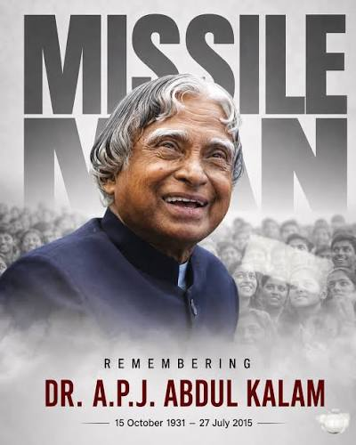

1931
A beginning in Rameswaram
Born on 15 October in Rameswaram, Tamil Nadu, into a modest family with strong values.
Remembering Dr. A.P.J. Abdul Kalam — scientist, teacher, author and visionary who inspired millions of young minds to dream beyond boundaries.
Explore his journey ↓
He believed that dreams are not what we see while sleeping, but something that does not let us sleep.
Born in Rameswaram, Tamil Nadu, Avul Pakir Jainulabdeen Abdul Kalam rose from humble beginnings to become one of India's most respected scientists and public figures. His journey reflected determination, curiosity and an unwavering commitment to the nation.
As an aerospace scientist, he played an important role in India's space and missile development programmes. His scientific contributions earned him the affectionate title of the "Missile Man of India."
Beyond science and public service, Kalam devoted himself to education and young people. As the 11th President of India, he remained approachable, inspiring students to develop knowledge, character and confidence to shape India's future.
Born on 15 October in Rameswaram, Tamil Nadu, into a modest family with strong values.
Joined India's space research efforts and contributed to the country's growing aerospace capabilities.
The successful launch of the SLV-3 placed the Rohini satellite into near-Earth orbit, marking an important milestone for India's space programme.
Received India's highest civilian honour for his exceptional contribution to scientific and public life.
Became the 11th President of India and used the office to connect deeply with students and citizens.
Passed away while doing what he loved most — speaking to students and inspiring the next generation.
You have to dream before your dreams can come true.
Kalam's greatest legacy was perhaps his ability to make ambition feel possible. He encouraged students to approach challenges with curiosity instead of fear and to see knowledge as a tool for meaningful change.
His books, speeches and interactions with students continue to influence young people across India. His life remains a reminder that background does not determine destiny — purpose, discipline and perseverance can create extraordinary possibilities.